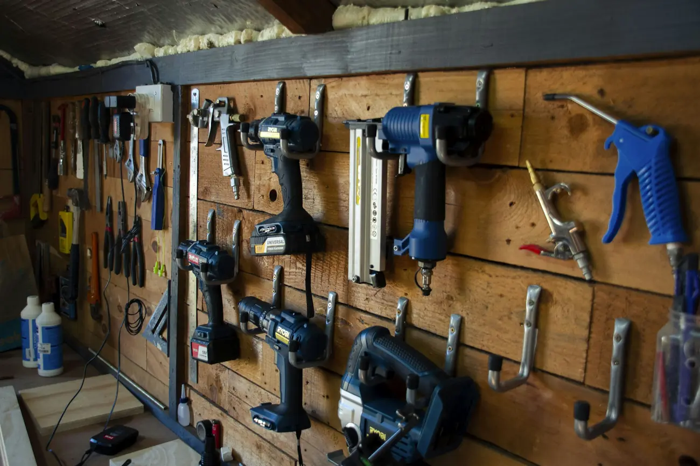
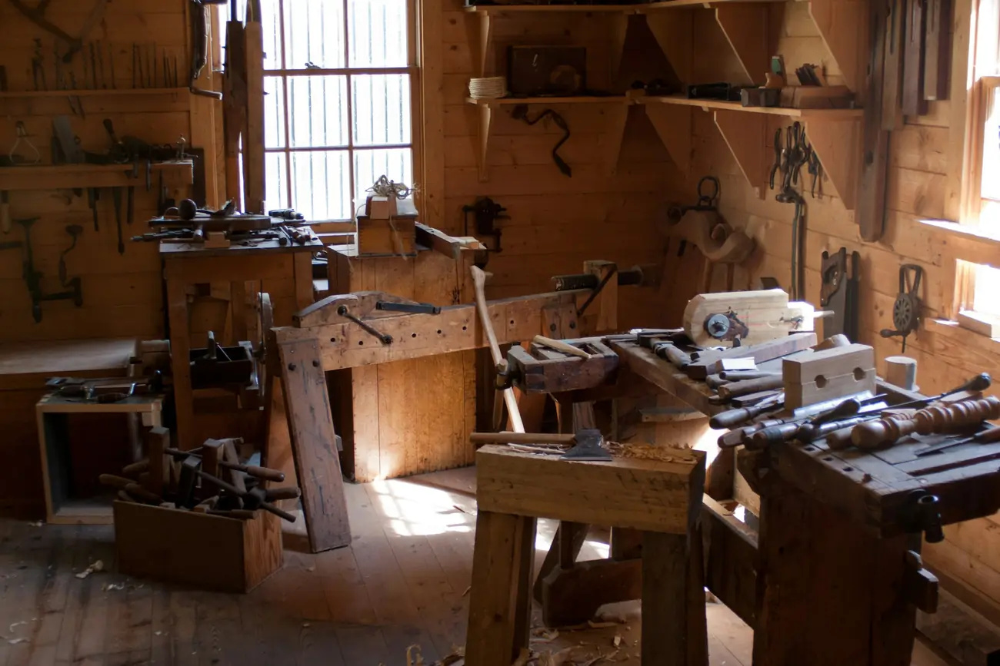

Kontakt
Rufen Sie an, das geht am schnellsten.
Für ein Aufmaß brauchen wir einen Termin. Am Telefon ist in fünf Minuten geklärt, ob wir der richtige Betrieb dafür sind.

- Telefon
- 05171 58 24 90
- werkstatt@tischlerei-hallmann.de
- Werkstatt
- Gunzelinstraße 14
31224 Peine - Öffnungszeiten
- Mo – Fr 7.30 – 16.30 Uhr
Sa nach Vereinbarung
Anfahrt
Von der B 494 kommend an der Ampel am Schützenplatz in die Gunzelinstraße abbiegen, die Werkstatt liegt nach 300 Metern rechts hinter dem Holzlager. Vor dem Tor stehen vier Parkplätze, die Einfahrt bitte frei lassen.
Eine eingebettete Karte fehlt hier bewusst: sie würde beim Aufruf Daten an einen fremden Anbieter senden, bevor jemand eingewilligt hat. Ein Link zur Kartenanwendung wird erst auf Klick geöffnet.

Werkstattwandjedes Werkzeug an seinem Platz

AufmaßZeichnung und Maßband
Kleine ArbeitenBeitel und Späne